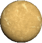

-
2016

- 4
- 1,07 x Terras
Localizado na zona habitável da estrela mais próxima do Sol, Proxima Centauri. Tem potencial para suportar água líquida.
-
2016
- 41
- 1,374 x Terras
Um sistema com sete planetas, três deles na zona habitável, orbitando uma estrela anã ultra-fria. Oferece oportunidades para estudar a habitabilidade.
-
1999


- 158
- 0,73 x Júpiteres
Conhecido como "Osiris", foi o primeiro exoplaneta a ter sua atmosfera detectada. É um exemplo de um Júpiter quente.
-
2014

- 579
- 1,71 x Terras
Um exoplaneta na zona habitável de sua estrela, é semelhante à Terra em tamanho. É um dos primeiros planetas encontrados em uma zona habitável de uma estrela anã.
-
2004

- 41
- 7,99 x Terras
Um "superterreno" que é quase duas vezes o tamanho da Terra, com uma superfície possivelmente coberta de grafite e diamantes devido à alta pressão.
-
2015

- 119
- 8,92 x Terras
Um exoplaneta na zona habitável de sua estrela, onde foi detectado vapor de água em sua atmosfera, sugerindo a possibilidade de condições favoráveis à vida.
-
2017

- 49
- 5,6 x Terras
Um exoplaneta em uma estrela anã, onde a atmosfera está sendo estudada para entender sua composição e potencial habitabilidade.
-
2009


- 48
- 8,41 x Terras
Este é um "superterreno" que orbita uma estrela anã vermelha. É interessante porque possui uma atmosfera densa e foi um dos primeiros exoplanetas a ser estudado para entender a composição atmosférica, com indicações de que pode ter vapor de água.
-
2005

- 64
- 1,13 x Júpiteres
Um exoplaneta conhecido por suas condições extremas. É um "Júpiter quente" que possui ventos supersonicos e uma atmosfera com nuvens de silicato. Observações revelaram que a luz do planeta é extremamente azul devido à sua composição atmosférica.
-
2011

- 4.015
- 0,44 x Terras
KOI-55 b é um exoplaneta localizado a cerca de 1.700 anos-luz da Terra, na constelação de Cygnus. Classificado como um "superterreno", ele orbita uma estrela semelhante ao Sol em uma órbita muito próxima, completando um ciclo em 5,8 dias. Devido à sua proximidade com a estrela, as temperaturas na superfície são extremamente altas, tornando a vida como a conhecemos improvável. Estudar KOI-55 b ajuda os astrônomos a entender a formação de sistemas planetários e as diversas condições que podem existir fora do nosso sistema solar.